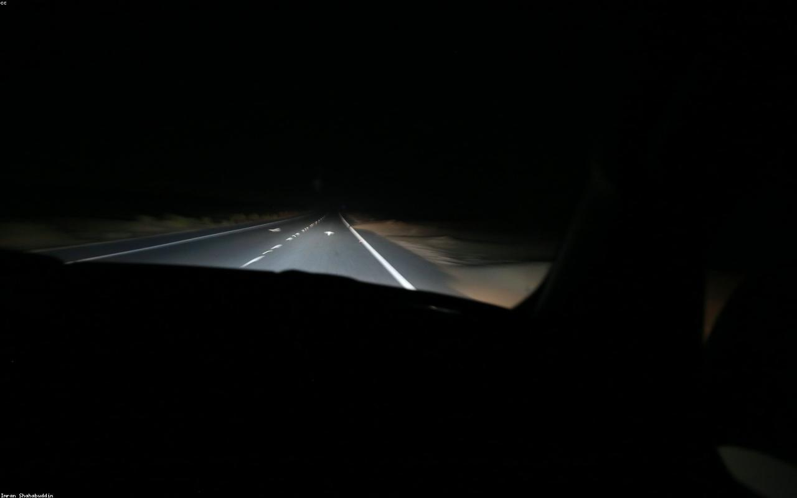

Find the eyes
MediaPipe FaceMesh locates 468 facial landmarks, six per eye, on every frame from the camera.

Driver vigilance, in real time
Vigil reads the subtle geometry of an eye and raises the alarm the instant drowsiness sets in. On-device computer vision, no footage ever leaves the car.
The idea
The Eye Aspect Ratio compares the height of an eye to its width. Open eyes hold a steady value; as the lids fall, it collapses toward zero. Track it across frames and drowsiness becomes a number you can act on.
MediaPipe FaceMesh locates 468 facial landmarks, six per eye, on every frame from the camera.
Vigil computes the Eye Aspect Ratio from those six points, the same formula Soukupá and Čech defined for blink detection.
A small state machine waits until the ratio stays below threshold for twenty straight frames, then sounds the alarm.

Higher means open. Lower means the lids are falling. The threshold sits at 0.25.
Live demo
Everything below runs in this browser tab. Grant camera access, close your eyes for a second, and watch the reading fall past the line.
Research
Vigil began as a peer-reviewed paper on real-time drowsiness detection, presented at the 5th IEEE International Conference on Computing Methodologies and Communication.S. Santhanam et al. · IEEE ICCMC 2021 Read the paper